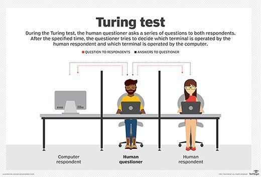

Alan Turing's Trivia
Interesting little tidbits about Alan Turing that'll help personify him as a real person, rather than this grand larger than life figure. Here you can find the peculiarities that made up the man named "Alan Turing".
Interesting Facts
For Joel
Gas Mask
In order to prevent combat allergies, he'd wear a gas mask while riding his bike
Faulty Chain
In spite of his ability to, he refused to fix his bikes faulty chain. Instead, took the time to discover the exact time he needed to dismount in order to keep it from sliping off
Mine is Mine
He would chain his tea mug to a radiator in order to prevent other staffers from being able to use it.
Other Interesting Trivia

Most people were not actually aware of the full extent of Turings contributions to the world. As his work on the Enigma machine was classified until the 1970s. Even then, the techniques he used to decipher the Enimga machine weren't released till 2013.
He created the Turing test in order to measure artificial intelligence. His paper "Computing Machinery and Intelligence" arguing that a machines ability to "think" was not a useful measure of intelligence. But rather, their artificial intelligence can be better assessed through the "imitation game". Where a computer is tested, based on whether or not they can convince a person that it is human